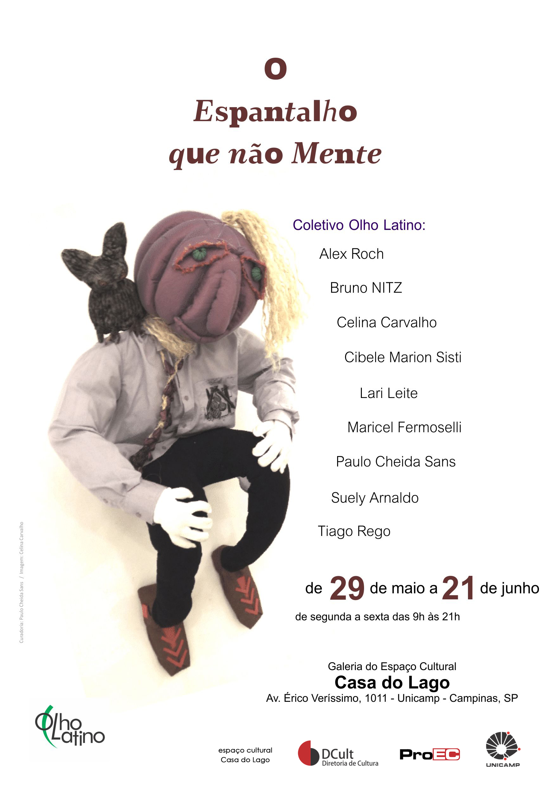

Coletivo Olho Latino e artistas chilenos expõe em Valparaíso

Vista parcial da mostra.
Chile: A mostra “Sudaca” do Coletivo Olho Latino e artistas chilenos está em exposição no Taller Calamina na cidade de Valparaíso, Chile, desde 28 de setembro até 17 de outubro. A mostra conta com a curadoria conjunta de Manu Sima e Paulo Cheida Sans. Manu selecionou as obras chilenas e Paulo Cheida coordenou a representação brasileira.
O tema “Sudaca” foi sugerido pela curadora Manu Sima para a concepção de gravuras geridas pelos valores sudamericanos. Participam 19 artistas expondo xilogravuras e linogravuras feitas especialmente para a mostra.
A temática de cada obra enfoca desde a natureza, as raízes indígenas, a mestiçagem até a pátria, o esporte e a identificação de ser aqui e agora em qualquer lugar do mundo, mas sempre carregando consigo o ser sudamericano.
Manu Sima esclarece que: “somos distintos, somos iguais, somos diversos. Nos unem laços culturais que provêm de maneiras similares de viver e conviver, assim como nos unem laços que surgem de dores compartidas.” Afirma que: “somos irmãos sudamericanos e isso nos dá força para seguir adiante.”
Para Paulo Cheida essa mostra é mais uma oportunidade para edificar os laços culturais entre povos irmãos e isso é um dos princípios que rege a atuação do Museu Olho Latino, que participa com o seu Grupo de Arte ao lado de gravadores chilenos.

Vista parcial da mostra.
Participam da mostra na representação brasileira: Alex Roch, Bruno Nitz, Celina Carvalho, Cibele Marion Sisti, Larissa Leite Zanandréa, Manu Sima, Maricel Fermoselli, Paulo Cheida Sans, Suely Arnaldo e Tiago Rego. Os artistas chilenos participantes são: Armando Lonkomilla, Christian Carrillo Cáceres, Cynthia Araya Dávalos, Inés Acevedo Rebillar, Pablo Carreño Grendi, Roberto Acosta, Sebastián Varas Mackenzie, Víctor Maturana Leigthon e Virgínia Maluk.
A exposição foi aberta com grande público e poderá ser visitada até 17 de outubro no Taller Calamina, situado na Rua Almirante Montt 432, Valparaíso, Chile. A entrada é gratuita.
 (clique na imagem para ampliar)
(clique na imagem para ampliar)
Serviço:
Exposição: “Sudaca” - Xilogravuras e linogravuras de gravadores brasileiros e chilenos.
Abertura: 28 de setembro, às 19h.
Curadoria: Manu Sima e Paulo Cheida Sans.
Expositores: Alex Roch, Bruno Nitz, Celina Carvalho, Cibele Marion Sisti, Larissa Leite Zanandréa, Manu Sima, Maricel Fermoselli, Paulo Cheida Sans, Suely Arnaldo e Tiago Rego. Os artistas chilenos participantes são: Armando Lonkomilla, Christian Carrillo Cáceres, Cynthia Araya Dávalos, Inés Acevedo Rebillar, Pablo Carreño Grendi, Roberto Acosta, Sebastián Varas Mackenzie, Víctor Maturana Leigthon e Virgínia Maluk.
Período da mostra: 28 de setembro a 17 de outubro de 2019..
Local: Taller Calamina.
Endereço: Rua Almirante Montt 432, Valparaíso, Chile.
Colaboração: Taller Calamina, Museu Olho Latino e El Mercurio de Valparaíso.
Entrada Gratuita.
Museu Olho Latino apresenta a mostra “Entre o Céu e o Inferno” do destacado gravador J. Borges

Atibaia: O Museu Olho Latino apresenta a exposição “Entre o Céu e o Inferno” do artista gravador e cordelista J. Borges. A mostra é composta por 12 xilogravuras e acontece de 30 de agosto a 30 de setembro no 1º andar do Centro de Convenções “Victor Brecheret”, em Atibaia, SP.
As obras em exposição foram selecionadas pelo artista e professor Alex Roch, curador da mostra, que visitou o ateliê do J. Borges, e escolheu as xilogravuras especialmente para o Museu Olho Latino. As temáticas das obras abrangem desde “santos” até “capetas” e expressam a festividade e a alegria que caracterizam as criações do artista.
José Francisco Borges, conhecido como J. Borges, nasceu em 1935, no município de Bezerros, Pernambuco, onde reside até hoje, escrevendo, ilustrando e publicando os seus folhetos de cordel.
A década de sessenta foi um marco na vida do artista: sua obra e sua técnica, conhecida por tacos, passou a ser reconhecida nacionalmente como uma atividade cultural. Hoje essas xilogravuras são impressas em grande quantidade, em diversos tamanhos, e vendidas a intelectuais, artistas e colecionadores de arte.
J. Borges é reconhecido como mestre da cultura brasileira. Em 1970 ilustrou a capa do livro “Palavras Andantes”, de Eduardo Galeano, e indicado por Ariano Suassuna fez as gravuras da abertura da novela Roque Santeiro, da Rede Globo. Em 2005, recebeu do Estado de Pernambuco o título de Patrimônio Vivo e em 2006 foi considerado pelo jornal The New York Times o “Gênio da Cultura Popular”. Segundo o diretor curador do Museu Olho Latino, Paulo Cheida Sans, o pernambucano J. Borges é um dos principais representantes da gravura popular brasileira.
A entrada é gratuita e a mostra poderá ser visitada na Al. Lucas Nogueira Garcez, 511 - Parque das Águas – em Atibaia, SP.

(clique na imagem para ampliar)
Serviço:
Mostra: Entre o Céu e o Inferno – Xilogravuras de J. Borges.
Curadoria: Alex Roch.
Período: 30 de agosto a 30 de setembro de 2019.
Visitação: de segunda a sexta-feira, das 09h às 16h.
Local: Museu Olho Latino – 1º andar do Centro de Convenções e Eventos "Victor Brecheret".
Endereço: Al. Lucas Nogueira Garcez, 511 - Parque das Águas - Atibaia, SP.
Realização: Museu Olho Latino e Secretaria de Cultura e Eventos - Prefeitura da Estância de Atibaia.
Palestra com Paulo Cheida encerra a Mostra comemorativa aos 35 anos do Garatuja

Atibaia: Encerrando a exposição que marca os 35 anos de atividade do Garatuja o artista plástico e fundador do Museu Olho Latino, Paulo Cheida Sans, fará uma palestra em Atibaia. Será no próximo dia 31 de agosto, às 15 horas, no Centro Cultural André Carneiro.
Na ocasião o convidado irá falar sobre a técnica da gravura, sua experiência como artista plástico, gravurista, arte educador, fundador e mantenedor do Museu Olho Latino. Paulo Cheida pode ser considerado um dos maiores incentivadores da técnica no Brasil. Possui um rico acervo com mais de mil obras de diferentes técnicas e de diversos países, com ênfase na produção latina americana.

Paulo Cheida Sans
Para orgulho dos atibaienses, o Museu Olho Latino está instalado em Atibaia, SP, desde 2006,
funcionando atualmente no mezanino do Centro de Convenções Victor Brecheret. O Museu conta com ativa programação voltada as exposições temporárias de artistas consagrados e iniciantes. Por lá já passaram artistas como Xico Stockinger, Geny Phillips, Dimas Garcia, Bruno Nitz, Márcio
Pannunzio e outros.
O Instituto Garatuja tem ligações antigas com o trabalho desenvolvido pelo Paulo Cheida. Em 2001 o Instituto Garatuja expôs na cidade a primeira exposição internacional de gravura, com obras de artistas da Bélgica, Peru, Áustria, Egito, Argentina, Itália, Cuba, etc. Todas de seu acervo. Em 2002 a mostra foi dedicada ao Japão. Em 2003 e 2004 voltou a ser dedicada aos artistas nacionais e internacionais, reunindo ainda a produção local. As Mostras aconteceram na sede do Instituto Garatuja e contou com palestras e oficinas, como do gravador Romildo Paiva.
Paulo Cheida é natural de Campinas formado em Educação Artística, licenciado em Artes Plásticas,
mestre em Filosofia da Educação pela PUC de Campinas e doutor em Artes pela Unicamp. É professor do Curso de Artes Visuais da PUC - Campinas. É autor de livros sobre arte-educação e já participou de mais de 500 exposições pelo mundo, tendo recebido 36 prêmios no Brasil e quatro no exterior.
Exposição de Trabalhos em Técnicas Mistas, Fotografia e Gravura.
Até 31 de agosto
Local: Centro Cultural André Carneiro - Rua José Lucas, nº 28, Centro - Atibaia, SP.
.
Palestra com Paulo Cheida Sans
Dia 31/08, sábado, às 15h no Centro Cultural André Carneiro – Atibaia, SP.
Projeto “Garatuja – 35 anos de Arte e Cultura em Atibaia”, realização do
Governo do Estado de São Paulo, Secretaria de Cultura do Estado de São
Paulo e Instituto de Arte e Cultura Garatuja, através do PROAC.
Coletivo Olho Latino expõe O espantalho que não mente na Casa do Lago

Campinas: A exposição “O espantalho que não mente” do Coletivo Olho Latino acontece de 29 de maio a 21 de junho na Galeria do Espaço Cultural Casa do Lago na Unicamp (Campinas, SP).
A temática “A mente do espantalho que não mente” veio a consolidar o projeto dos “Espantalhos” iniciado em 2016 e que foi sendo desenvolvido com a inserção de novas obras. Para a concepção da mostra atual, o Coletivo Olho Latino apresenta obras tridimensionais com esculturas feitas com materiais diversos, tendo a xilogravura como destaque em todas as criações.
A mostra é apresentada em caráter itinerante e em cada exposição é exibida com novas variações, caracterizando sempre em perfil expositivo inédito, reunindo a essência da produção realizada com o tema dos “Espantalhos” que alcança êxito por onde é exposta. No exterior os “espantalhos” já foram vistos no “1º Festival de Videoarte Mata Negra de la Patagonia Austral” da Argentina e na “VII Bienal de Lo Inusitado” realizada no Centro Cultural Brasil Peru da Embaixada do Brasil em Lima.
Para o curador, Paulo Cheida Sans, a mostra é a concretização de um projeto de produção artística extensa, possibilitando ao visitante conhecer um modo peculiar de criação coletiva onde cada artista, mesmo tendo a sua marca pessoal, contribui para a formação de um visual único e característico da equipe, reforçando a presença do coletivo como um dos principais do país nesse gênero.
A mostra do Coletivo Olho Latino reúne cerca de 20 obras realizadas por artistas de várias cidades do interior do Estado de São Paulo. Todos os expositores possuem currículos com inúmeras participações e todos são professores da área de Artes. Participam: Alex Roch, Bruno NITZ, Celina Carvalho, Cibele Marion Sisti, Lari Leite, Maricel Fermoselli, Paulo Cheida Sans, Suely Arnaldo e Tiago Rego.
O manifesto do “Espantalho”, que alude aos problemas sociais da atualidade, pode ser visto no site www.olholatino.com.br.
A exposição pode ser visitada de 29 de maio a 21 de junho 2018, de segunda a sexta-feira, das 9h às 21h, na Galeria do Espaço Cultural Casa do Lago da Unicamp, situada na Av. Érico Veríssimo, 1011 - Unicamp - em Campinas. Em 7 de junho, às 16h, acontecerá o encontro com os expositores no local da mostra. A entrada é gratuita.
Serviço:
"Qual é o seu espanto?" está em exposição no Museu Olho Latino

Atibaia: A exposição “Qual é o seu espanto?”, do Coletivo Olho Latino com curadoria do prof. Dr. Paulo Cheida Sans, está aberta ao público até 21 de maio no Museu Olho Latino em Atibaia, SP. Vale conferir o evento que apresenta mais uma versão inédita da temática “Espantalho”, em referência aos problemas sociais da atualidade. A mostra reúne gravuras nas técnicas de linogravura, xilogravura e serigrafia.
O projeto “Espantalho” vem sendo desenvolvido pelo Coletivo desde 2016 e já foi exposto em Jundiaí, Campinas e também no exterior, como na Argentina e no Peru.
A mostra do Coletivo Olho Latino reúne obras realizadas por artistas de várias cidades do interior do Estado de São Paulo. Todos os expositores possuem currículos com inúmeras participações e todos são professores da área de Artes. Participam: Alex Roch, Bruno NITZ, Celina Carvalho, Cibele Marion Sisti, Lari Leite, Maricel Fermoselli, Paulo Cheida Sans, Suely Arnaldo e Tiago Rego.
O evento em Atibaia acontece de 21 de março a 21 de maio no Museu Olho Latino, localizado no 1º andar do Centro de Convenções e Eventos “Victor Brecheret” na Al. Lucas Nogueira Garcêz, 511 - Estância de Atibaia, SP. A entrada é gratuita.
A realização da mostra “Qual é o seu espanto?” é do Museu Olho Latino e da Secretaria de Cultura e Eventos - Prefeitura da Estância de Atibaia.
Serviço:
Exposição: “Qual é o seu espanto?” - Coletivo Olho Latino.
Curadoria: Paulo Cheida Sans.
Expositores: Alex Roch, Bruno NITZ, Celina Carvalho, Cibele Marion Sisti, Lari Leite, Maricel Fermoselli, Paulo Cheida Sans, Suely Arnaldo e Tiago Rego.
Período da mostra: 21 março a 21 de maio de 2018.
Local: Museu Olho Latino e Centro de Convenções e Eventos “Victor Brecheret”
Endereço: Al. Lucas Nogueira Garcêz, 511 - Estância de Atibaia, SP.
Entrada Gratuita.
Portal Olho Latino